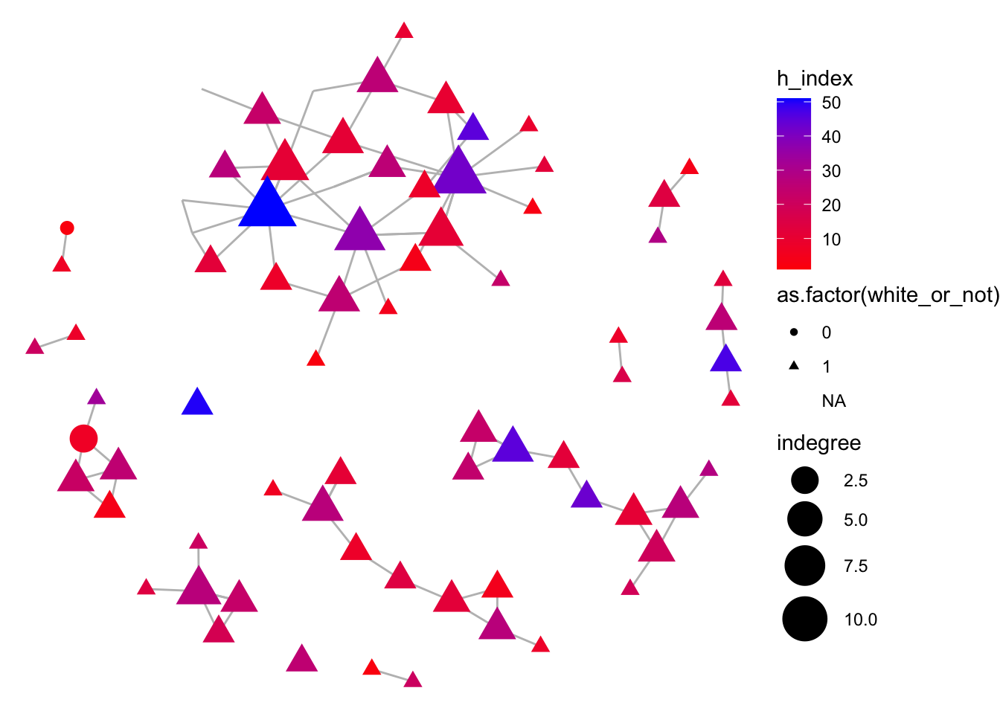
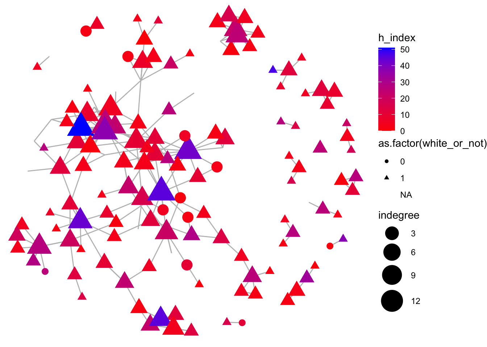
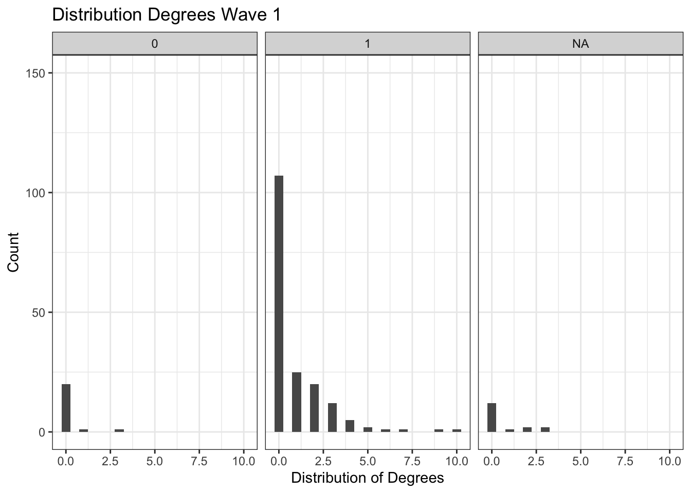
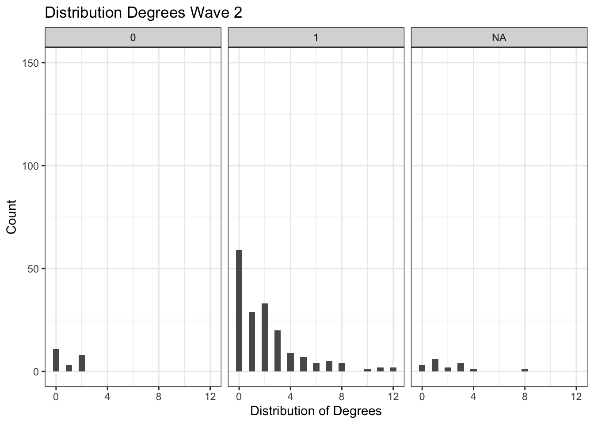
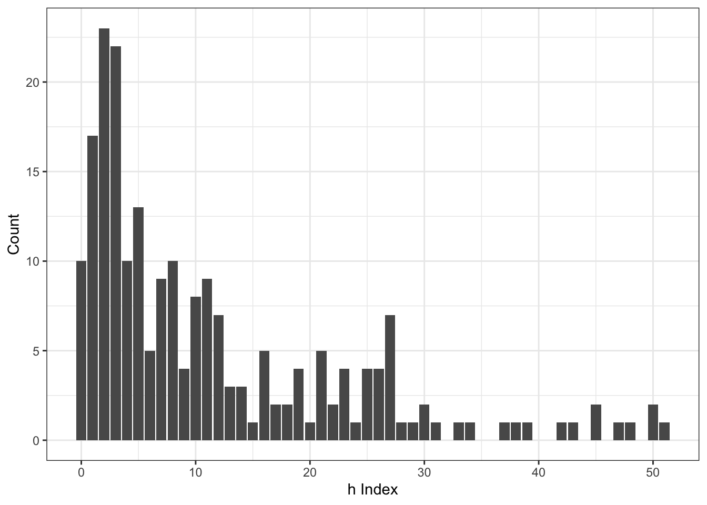
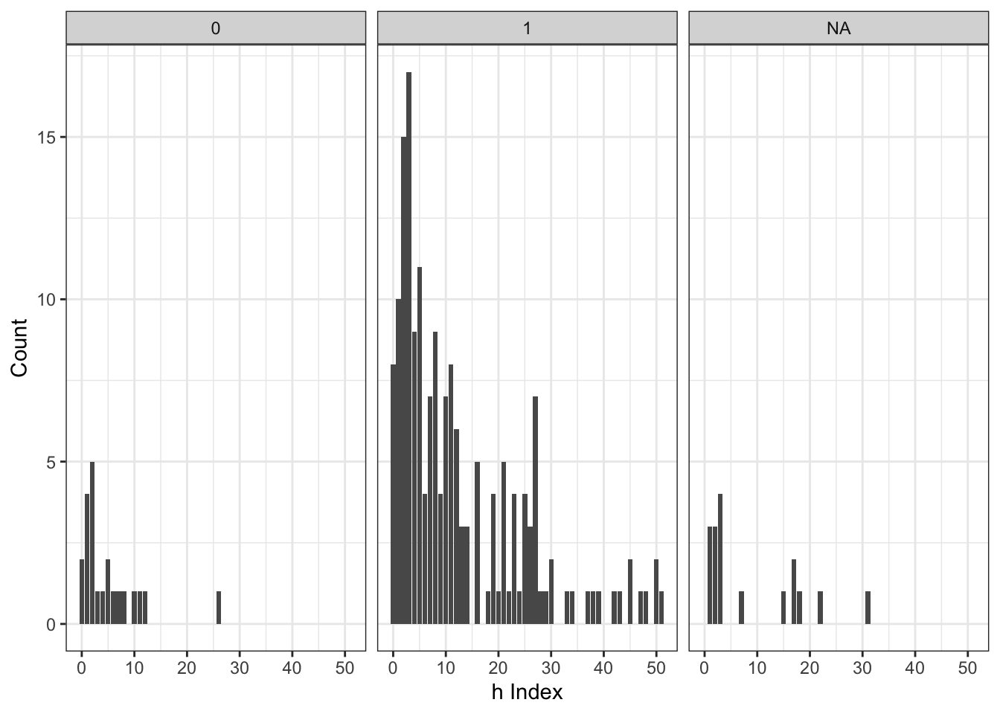
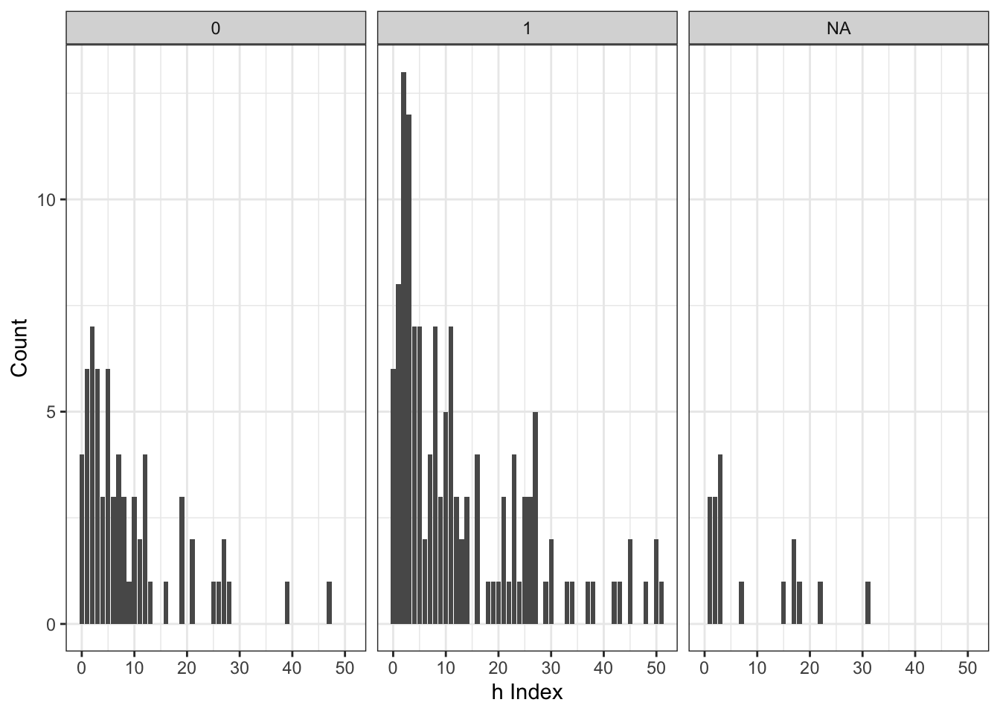

Descriptives
2024-10-24
1 Ready All the Stuff
… and empty workspace,
rm(list = ls())… user defined functions,
fpackage.check <- function(packages) {
lapply(packages, FUN = function(x) {
if (!require(x, character.only = TRUE)) {
install.packages(x, dependencies = TRUE)
library(x, character.only = TRUE)
}
})
}
fsave <- function(x, file = NULL, location = "./data/processed/") {
ifelse(!dir.exists("data"), dir.create("data"), FALSE)
ifelse(!dir.exists("data/processed"), dir.create("data/processed"), FALSE)
if (is.null(file))
file = deparse(substitute(x))
datename <- substr(gsub("[:-]", "", Sys.time()), 1, 8)
totalname <- paste(location, file, "_", datename, ".rda", sep = "")
save(x, file = totalname) #need to fix if file is reloaded as input name, not as x.
}
fload <- function(filename) {
load(filename)
get(ls()[ls() != "filename"])
}
fshowdf <- function(x, ...) {
knitr::kable(x, digits = 2, "html", ...) %>%
kableExtra::kable_styling(bootstrap_options = c("striped", "hover")) %>%
kableExtra::scroll_box(width = "100%", height = "300px")
}
fMoran.I <- function(x, weight, scaled = FALSE, na.rm = FALSE, alternative = "two.sided", rowstandardize = TRUE) {
if (rowstandardize) {
if (dim(weight)[1] != dim(weight)[2])
stop("'weight' must be a square matrix")
n <- length(x)
if (dim(weight)[1] != n)
stop("'weight' must have as many rows as observations in 'x'")
ei <- -1/(n - 1)
nas <- is.na(x)
if (any(nas)) {
if (na.rm) {
x <- x[!nas]
n <- length(x)
weight <- weight[!nas, !nas]
} else {
warning("'x' has missing values: maybe you wanted to set na.rm = TRUE?")
return(list(observed = NA, expected = ei, sd = NA, p.value = NA))
}
}
ROWSUM <- rowSums(weight)
ROWSUM[ROWSUM == 0] <- 1
weight <- weight/ROWSUM
s <- sum(weight)
m <- mean(x)
y <- x - m
cv <- sum(weight * y %o% y)
v <- sum(y^2)
obs <- (n/s) * (cv/v)
if (scaled) {
i.max <- (n/s) * (sd(rowSums(weight) * y)/sqrt(v/(n - 1)))
obs <- obs/i.max
}
S1 <- 0.5 * sum((weight + t(weight))^2)
S2 <- sum((apply(weight, 1, sum) + apply(weight, 2, sum))^2)
s.sq <- s^2
k <- (sum(y^4)/n)/(v/n)^2
sdi <- sqrt((n * ((n^2 - 3 * n + 3) * S1 - n * S2 + 3 * s.sq) - k * (n * (n - 1) * S1 - 2 * n *
S2 + 6 * s.sq))/((n - 1) * (n - 2) * (n - 3) * s.sq) - 1/((n - 1)^2))
alternative <- match.arg(alternative, c("two.sided", "less", "greater"))
pv <- pnorm(obs, mean = ei, sd = sdi)
if (alternative == "two.sided")
pv <- if (obs <= ei)
2 * pv else 2 * (1 - pv)
if (alternative == "greater")
pv <- 1 - pv
list(observed = obs, expected = ei, sd = sdi, p.value = pv)
} else {
if (dim(weight)[1] != dim(weight)[2])
stop("'weight' must be a square matrix")
n <- length(x)
if (dim(weight)[1] != n)
stop("'weight' must have as many rows as observations in 'x'")
ei <- -1/(n - 1)
nas <- is.na(x)
if (any(nas)) {
if (na.rm) {
x <- x[!nas]
n <- length(x)
weight <- weight[!nas, !nas]
} else {
warning("'x' has missing values: maybe you wanted to set na.rm = TRUE?")
return(list(observed = NA, expected = ei, sd = NA, p.value = NA))
}
}
# ROWSUM <- rowSums(weight) ROWSUM[ROWSUM == 0] <- 1 weight <- weight/ROWSUM
s <- sum(weight)
m <- mean(x)
y <- x - m
cv <- sum(weight * y %o% y)
v <- sum(y^2)
obs <- (n/s) * (cv/v)
if (scaled) {
i.max <- (n/s) * (sd(rowSums(weight) * y)/sqrt(v/(n - 1)))
obs <- obs/i.max
}
S1 <- 0.5 * sum((weight + t(weight))^2)
S2 <- sum((apply(weight, 1, sum) + apply(weight, 2, sum))^2)
s.sq <- s^2
k <- (sum(y^4)/n)/(v/n)^2
sdi <- sqrt((n * ((n^2 - 3 * n + 3) * S1 - n * S2 + 3 * s.sq) - k * (n * (n - 1) * S1 - 2 * n *
S2 + 6 * s.sq))/((n - 1) * (n - 2) * (n - 3) * s.sq) - 1/((n - 1)^2))
alternative <- match.arg(alternative, c("two.sided", "less", "greater"))
pv <- pnorm(obs, mean = ei, sd = sdi)
if (alternative == "two.sided")
pv <- if (obs <= ei)
2 * pv else 2 * (1 - pv)
if (alternative == "greater")
pv <- 1 - pv
list(observed = obs, expected = ei, sd = sdi, p.value = pv)
}
}… packages,
require(tidyverse)
require(RsienaTwoStep)
require(RSiena)
require(igraph)
require(poweRlaw)
require(ggraph)
require(knitr)2 Descriptive Analysis
In this chapter, I will first give a quick overview of the collaboration network trough a visual representation of the relevant data. This will be followed by some simple network descriptives, before continuing onto an analysis of degrees and prestige segregation in networks.
2.1 Visual Network Descriptives
The following graphs represent the racial and ethnic segregation of the network, at wave 1 and 2 respectively. For a better layout of the graph, the isolates have been removed, and therefore only those actors who collaborated are included in the graphs.
2.1.1 Race
In this network, the colour of the nodes represents an author’s prestige – the bluer, the higher their h-index. The shape of the nodes, furthermore, represents their race. Triangles refer to white people, and circles to poc. Lastly, the size of this shape is determined by the number of degrees – referring, in this case, to the number of co-authorship relations this author has established within this time period.
wave_1 <- graph_from_adjacency_matrix(wave_1)
wave_2 <- graph_from_adjacency_matrix(wave_2)
indegree_w1 <- igraph::degree(wave_1, mode = "all")
indegree_w2 <- igraph::degree(wave_2, mode = "all")
# wave 1
demographics_hannah <- demographics_hannah %>%
mutate(h_index_2 = case_when(
h_index >= 60 ~ 50,
TRUE ~ h_index
))
view(demographics_hannah)
# assign h-index to scholar
V(wave_1)$h_index <- demographics_hannah$h_index_2
V(wave_1)$white_or_not <- demographics_hannah$white_or_not
V(wave_1)$born_in_binary <- demographics_hannah$born_in_binary
V(wave_1)$gender <- ifelse(demographics_hannah$perc_female >= .5, 1, 0)
V(wave_1)$indegree <- indegree_w1
#remove isolates
noisolates_w1 <- delete_vertices(wave_1, V(wave_1)[degree(wave_1) == 0])
#set size of plot
options(repr.plot.width = 25, repr.plot.height = 25)
# wave 2
# assign h-index to scholar
V(wave_2)$h_index <- demographics_hannah$h_index_2
V(wave_2)$white_or_not <- demographics_hannah$white_or_not
V(wave_2)$born_in_binary <- demographics_hannah$born_in_binary
V(wave_2)$gender <- ifelse(demographics_hannah$perc_female >= .5, 1, 0)
V(wave_2)$indegree <- indegree_w2
#remove isolates
noisolates_w2 <- delete_vertices(wave_2, V(wave_2)[degree(wave_2) == 0])The left graph represents the first wave, which ranges from 2015 to 2018, and the graph on the right represents the second wave, which ranges from 2019 to 2023 .
#plot wave 1
ggraph(noisolates_w1,
layout = "fr") +
geom_edge_link(color = "gray", width = 0.5) +
geom_node_point(aes(size = indegree, color = h_index, shape = as.factor(white_or_not))) +
scale_size(range = c(3, 10)) +
scale_color_gradient(low = "red", high = "blue") +
theme_void()
#plot wave 2
ggraph(noisolates_w2,
layout = "fr") +
geom_edge_link(color = "gray", width = 0.5) +
geom_node_point(aes(size = indegree, color = h_index, shape =
as.factor(white_or_not))) +
scale_size(range = c(3, 10)) +
scale_color_gradient(low = "red", high = "blue") +
theme_void()
When looking at this graph, several things become clear quite
quickly. Firstly, that the network becomes quite a lot busier in the
second wave. The reason for this is the method of data collection as
mentioned earlier, and as such, not immediately relevant. What is
relevant, however, is the fact that most of the shapes – in both
networks – are triangles. While this overrepresentation of white people
was already noted in the previous chapter, what can now also be seen, is
that – especially in the first wave – very few circles are bigger than
the smallest triangle. This means that for the poc in the network, their
degrees are – on average – smaller than those of white people.
Furthermore, as can be noted by the comparative overrepresentation of
blue(er) triangles compared to red circles, poc are not only less likely
to collaborate, but their h-indices are also, on average, much
lower than those of white people.
While there are some changes between the waves in these respects – there are some circles that tend a bit more to purple than those in the first wave – the changes are quite small. Though no final conclusions can be reached here, it can be said that it is quite clear that people of colour are both underrepresented in academia, but also seem to collaborate less, and that their works are less well-known.
2.1.2 Ethnicity
For this network, everything is the same, except that instead of the shapes indicating the race of an author, they now indicate ethnicity, with triangles indicating that an author is Dutch, and circles indicating that an author is not.
#plot wave 1
ggraph(noisolates_w1,
layout = "fr") +
geom_edge_link(color = "gray", width = 0.5) +
geom_node_point(aes(size = indegree, color = h_index, shape = as.factor(born_in_binary))) +
scale_size(range = c(3, 10)) +
scale_color_gradient(low = "red", high = "blue") +
theme_void() +
labs(title = "Network Wave 1, no Isolates -- Shape Indicating Ethnicity")
#plot wave 1
ggraph(noisolates_w2,
layout = "fr") +
geom_edge_link(color = "gray", width = 0.5) +
geom_node_point(aes(size = indegree, color = h_index, shape = as.factor(born_in_binary))) +
scale_color_gradient(low = "red", high = "blue") +
theme_void() +
labs(title = "Network Wave 2, no Isolates -- Shape Indicating Ethnicity")

Similarly to the previous network, there still seems to be an
under-representation of minorities in this network, though not as
strongly as was the case for race. There is, furthermore, at least one
circle in the first wave that tends very strongly to blue – indicating a
non-Dutch person with a rather high h-index, but their degrees
are not as high as some Dutch authors with similar h-indices.
The difference between the two waves is still quite large when it comes
to the number of connected authors, but not when it comes to ethnic
segregation.
Similarly to the graphs on race, these graphs on ethnicity seem to indicate that there are fewer non-Dutch than Dutch authors in this network - which is not extremely odd, since the sample concerns Dutch universities. However, it furthermore also indicates that these non-Dutch authors seem to collaborate less with Dutch authors, and often have lower prestige.
In order to find out if these correlations are actually meaningful, I will now look at some actual network statistics.
2.2 Network Descriptives
The first statistics concern some of the basic aspects of the
network, just so we can look at how it has changed over time - and what
exactly has changed.
2.2.1 Basic Network Descriptives
2.2.1.1 Wave 1
Number of vertices in the first wave (W1).
# wave 1
# number of vertices
vcount(net_graph_w1) ## [1] 214The number of edges in W1.
ecount(net_graph_w1)## [1] 89The dyad census in W1, which indicates that there are 7 mutual ties, 73 asymmetrical ties (ties where no tie is returned), and 22711 instances where there could have been a tie, but was not.
igraph::dyad_census(net_graph_w1)## $mut
## [1] 7
##
## $asym
## [1] 73
##
## $null
## [1] 22711The triad census, furthermore indicates which triads are present in the network in W1.
igraph::triad_census(net_graph_w1)## [1] 1593772 15185 1449 27 54 37 19 10 6
## [10] 0 1 1 1 2 0 0The general density of this graph is 0.00195, which is quite low –
however, one has to also take into account that we are dealing with data
observed in 2022, and that we are using those data to retrospectively
assess a networks three years earlier. Mostly, we will be missing PhDs,
and other people who are not working at their universities anymore, and
have started working either somewhere outside of our sample, or have
stopped working in academia altogether.
igraph::edge_density(net_graph_w1)## [1] 0.0019525252.2.1.2 Wave 2
Number of vertices in the second wave (W2) – the same number as in wave 1, which makes sense, due to the sampling method.
vcount(net_graph_w2) ## [1] 214The number of edges in W2 – a strong increase compared to the first wave, having increased almost 2.5 times.
ecount(net_graph_w2)## [1] 213The dyad census in W1, which indicates that there are 19 mutual ties, 174 asymmetrical ties (ties where no tie is returned), and 22598 instances where there could have been a tie, but was not.
igraph::dyad_census(net_graph_w2)## $mut
## [1] 19
##
## $asym
## [1] 174
##
## $null
## [1] 22598The triad census, furthermore indicates which triadic configurations are present in the network of the second wave.
igraph::triad_census(net_graph_w2)## [1] 1570278 35764 3936 87 300 87 50 15 30
## [10] 0 3 3 3 2 5 1The general density of this graph is 0.0047, which means it has almost tripled in the time between waves – however, one has to still take into account that this might just be because these measures are much more accurate than those for the first wave. Regardless, we do thus see an evolved network.
igraph::edge_density(net_graph_w2)## [1] 0.004672897With these factors in mind, that change has thus indeed occurred between waves, and that the density has especially increased, I will now turn towards the descriptives that can help answer the research questions.
2.2.2 Degree Centrality
Degree centrality - or degree - concerns the number of other actors, or alters an author, or ego is connected with. The structure of our data is as such, that there is an differentiation between degrees coming in - indegrees - and degrees going out - outdegrees. Indegrees, in this context, refer to the ties ‘received’ by an ego, and concretely indicate being ‘not the first’ author in a paper. Outdegrees, on the other hand, refer to the opposite. They are ties ‘sent’ by the ego, and as such refer to collaborations in which the ego is the first author in the paper.
2.2.2.1 General
#degree centrality w1
degree_w1 <- degree(net_graph_w1)
degree_w1 <- as.data.frame(degree_w1)
view(degree_w1)
ggplot(degree_w1, aes(as.numeric(degree_w1), colour = as.numeric(degree_w1) )) +
geom_histogram(binwidth = .5) +
labs(
title = "Distribution Degrees Wave 1",
x = "Distribution of Degrees",
y = "Count"
) +
ylim(0, 150) +
theme_bw()
#degree centrality w2
degree_w2 <- degree(net_graph_w2)
degree_w2 <- as.data.frame(degree_w2)
ggplot(degree_w2, aes(as.numeric(degree_w2), colour = as.numeric(degree_w2))) +
geom_histogram(binwidth = .5) +
labs(
title = "Distribution Degrees Wave 2",
x = "Distribution of Degrees",
y = "Count"
) +
ylim(0, 150) +
theme_bw()
#could also do -- degree centrality of white v. non-white people, or degree centrality of dutch v. non-dutch people 

As demonstrated by these histograms, there has been some shift in the distribution of degrees between waves. Generally speaking, they have become more evenly distributed – with most actors in the network now having collaborated on at least one paper, instead of none - as was the case in the first wave. Furthermore, the maximum number of degrees has also increased, from 10 to 12.
2.3 Hypothesis 1: Segregation in Degrees
To further evaluate how these characteristics are segregated across race and ethnicity, I will first look at the differences in mean degree per group, per wave. In other words, I will assess the mean degree for white people, people of colour, Dutch people, and non-Dutch people, for both wave 1 and 2.
degree_w1 <- degree(net_graph_w1)
degree_w1 <- as.data.frame(degree_w1)
degree_dem_1 <- cbind(degree_w1, demographics_hannah)
degree_w2 <- degree(net_graph_w2)
degree_w2 <- as.data.frame(degree_w2)
degree_dem_2 <- cbind(degree_w2, demographics_hannah)#setting up the data - race
white_people <- degree_dem_1 %>%
filter(
white_or_not == 1
)
poc <- degree_dem_1 %>%
filter(
white_or_not == 0
)
mean_degree_white <- mean(white_people$degree_w1)
mean_degree_white <- mean_degree_white %>%
round(2)
mean_degree_poc <- mean(poc$degree_w1)
mean_degree_poc <- mean_degree_poc %>%
round(2)
Race <- c("White People", "POC")
Degree <- c(mean_degree_white, mean_degree_poc)
mean_degrees <- cbind(Race, Degree)
# ethnicity
dutch_people <- degree_dem_1 %>%
filter(
born_in_binary == 1
)
non_dutch_people <- degree_dem_1 %>%
filter(
born_in_binary == 0
)
mean_degree_dutch <- mean(dutch_people$degree_w1)
mean_degree_dutch <- mean_degree_dutch %>%
round(2)
mean_degree_non_dutch <- mean(non_dutch_people$degree_w1)
mean_degree_non_dutch <- mean_degree_non_dutch %>%
round(2)
Ethnicity <- c("Dutch People", "Non-Dutch People")
Degree <- c(mean_degree_dutch, mean_degree_non_dutch)
mean_degrees_2 <- cbind(Ethnicity, Degree)kableExtra::kable(mean_degrees, caption = "Mean Degrees White People and POC")| Race | Degree |
|---|---|
| White People | 0.93 |
| POC | 0.18 |
kableExtra::kable(mean_degrees_2, caption = "Mean Degrees Dutch and Non-Dutch")| Ethnicity | Degree |
|---|---|
| Dutch People | 1.1 |
| Non-Dutch People | 0.35 |
These numbers are in line with what was demonstrated by the
visualisations of the network earlier: both poc and non_Dutch people
have less collaborations than white people, and Dutch people -
respectively. Furthermore, as could be noted from the smaller average
size of the race vectors compared to the ethnicity vectors, the average
degree for non-Dutch people is still higher than that of people of
colour.
#setting up the data - race
white_people_2 <- degree_dem_2 %>%
filter(
white_or_not == 1
)
poc_2 <- degree_dem_2 %>%
filter(
white_or_not == 0
)
mean_degree_white_2 <- mean(white_people_2$degree_w2)
mean_degree_white_2 <- mean_degree_white_2 %>%
round(2)
mean_degree_poc_2 <- mean(poc_2$degree_w2)
mean_degree_poc_2 <- mean_degree_poc_2 %>%
round(2)
Race <- c("White People", "POC")
Degree <- c(mean_degree_white_2, mean_degree_poc_2)
mean_degrees_a <- cbind(Race, Degree)
# ethnicity
dutch_people_2 <- degree_dem_2 %>%
filter(
born_in_binary == 1
)
non_dutch_people_2 <- degree_dem_2 %>%
filter(
born_in_binary == 0
)
mean_degree_dutch_2 <- mean(dutch_people_2$degree_w2)
mean_degree_dutch_2 <- mean_degree_dutch_2 %>%
round(2)
mean_degree_non_dutch_2 <- mean(non_dutch_people_2$degree_w2)
mean_degree_non_dutch_2 <- mean_degree_non_dutch_2 %>%
round(2)
Ethnicity <- c("Dutch People", "Non-Dutch People")
Degree <- c(mean_degree_dutch_2, mean_degree_non_dutch_2)
mean_degrees_b <- cbind(Ethnicity, Degree)kableExtra::kable(mean_degrees_a, caption = "Mean Degrees White People and POC Wave 2")| Race | Degree |
|---|---|
| White People | 2.13 |
| POC | 0.86 |
kableExtra::kable(mean_degrees_b, caption = "Mean Degrees Dutch and Non-Dutch Wave 2")| Ethnicity | Degree |
|---|---|
| Dutch People | 2.34 |
| Non-Dutch People | 1.29 |
This pattern persists into the second wave, though the proportions of
degree have become more favourable for both racial and ethnic
minorities. However, there is still a strong segregation for both these
groups demonstrated in these numbers.
This can furthermore be illustrated by the following graph:
ggplot(degree_dem_1, aes(as.numeric(degree_w1))) +
geom_histogram(binwidth = .5) +
labs(
title = "Distribution Degrees Wave 1",
x = "Distribution of Degrees",
y = "Count"
) +
ylim(0, 150) +
theme_bw() +
facet_wrap(~white_or_not)
#degree centrality w2
degree_w2 <- degree(net_graph_w2)
degree_w2 <- as.data.frame(degree_w2)
degree_dem_2 <- cbind(degree_w2, demographics_hannah)
ggplot(degree_dem_2, aes(as.numeric(degree_w2))) +
geom_histogram(binwidth = .5) +
labs(
title = "Distribution Degrees Wave 2",
x = "Distribution of Degrees",
y = "Count"
) +
ylim(0, 150) +
theme_bw() +
facet_wrap(~white_or_not)
This graph highlights the difference in degree-distributions between white people (1) and people of colour (0) - across waves. In line with most observations on the differences in number of collaborations between waves, this graph also demonstrates that there are much fewer people - regardless of race - without collaborations. However, it should also be noted that in both waves, no people of colour seem to exceed three collaborations, while many white people do seem to achieve this.
Whether these differences in degree are qualitatively different between white people and people of colour, can be estimated using an independent two-sample t-test, testing the null-hypothesis that there is no difference between the mean degree of the minority group, and the majority group in question.
t.poc_deg_1 <- t.test(poc$degree_w1, white_people$degree_w1, alternative = "two.sided", var.equal = F)
t.poc_deg_2 <- t.test(poc_2$degree_w2, white_people_2$degree_w2, alternative = "two.sided", var.equal = F)
t.eth_deg_1 <- t.test(non_dutch_people$degree_w1, dutch_people$degree_w1, alternative = "two.sided", var.equal = FALSE)
t.eth_deg_2 <- t.test(non_dutch_people_2$degree_w2, dutch_people_2$degree_w2, alternative = "two.sided", var.equal = FALSE)t.poc_deg_1##
## Welch Two Sample t-test
##
## data: poc$degree_w1 and white_people$degree_w1
## t = -4.002, df = 60.11, p-value = 0.0001749
## alternative hypothesis: true difference in means is not equal to 0
## 95 percent confidence interval:
## -1.1242712 -0.3749496
## sample estimates:
## mean of x mean of y
## 0.1818182 0.9314286t.poc_deg_2##
## Welch Two Sample t-test
##
## data: poc_2$degree_w2 and white_people_2$degree_w2
## t = -4.5488, df = 70.851, p-value = 2.176e-05
## alternative hypothesis: true difference in means is not equal to 0
## 95 percent confidence interval:
## -1.8235390 -0.7120454
## sample estimates:
## mean of x mean of y
## 0.8636364 2.1314286t.eth_deg_1##
## Welch Two Sample t-test
##
## data: non_dutch_people$degree_w1 and dutch_people$degree_w1
## t = -3.8916, df = 192.95, p-value = 0.0001371
## alternative hypothesis: true difference in means is not equal to 0
## 95 percent confidence interval:
## -1.1312477 -0.3702559
## sample estimates:
## mean of x mean of y
## 0.3484848 1.0992366t.eth_deg_2##
## Welch Two Sample t-test
##
## data: non_dutch_people_2$degree_w2 and dutch_people_2$degree_w2
## t = -3.3909, df = 189.64, p-value = 0.0008476
## alternative hypothesis: true difference in means is not equal to 0
## 95 percent confidence interval:
## -1.6697118 -0.4415535
## sample estimates:
## mean of x mean of y
## 1.287879 2.343511As, however, indicated by these t-test, this null-hypothesis can be rejected in each case. Thus giving evidence for both H1a, and H1b, namely that - on average - racial and ethnic minority groups collaborate less than racial and ethnic majority groups.
2.4 Hypothesis 3: Segregation in Prestige
2.4.1 h-Index
In order to assess the third hypothesis, which stated that the h-index is both segregated across race, and also across ethnicity, a similar analysis to the previous hypothesis will be performed.
2.4.1.1 Calculations
The following graph represents the distribution of the h-index across the entire sample:
demographics_hannah %>%
ggplot(mapping = aes(h_index_2)) +
geom_bar(position = "dodge") +
labs(
x = "h Index",
y = "Count"
) +
theme_bw() 
In order to better estimate the differences in average h-index between minority and majority groups, the following graph displays the h-index of people of colour and white people, on the left, and that of ethnic minorities and Dutch people, on the right.
demographics_hannah %>%
ggplot(mapping = aes(h_index_2)) +
geom_bar(position = "dodge") +
labs(
x = "h Index",
y = "Count"
) +
theme_bw() +
facet_wrap(~white_or_not)
demographics_hannah %>%
ggplot(mapping = aes(h_index_2)) +
geom_bar(position = "dodge") +
labs(
x = "h Index",
y = "Count"
) +
theme_bw() +
facet_wrap(~born_in_binary)
As already indicated by the visualised network at the beginning of this chapter, the h-indices of both people of colour, and ethnic minorities are much lower than those of white and Dutch people. While the highest h-index for people of an ethnic minority is quite high, it is also a clear outlier, as opposed to the denser and higher distribution of h-indices of both white and Dutch people.
To further investigate these distributions and differences, a two-sample t-test was performed, first assessing the differences in mean between people of colour, and white people, and subsequently assessing the difference between Dutch and non-Dutch people.
# overal mean h-index
mean(demographics_hannah$h_index)
# segregation h-inedex
mean_h_race <- tapply(demographics_hannah$h_index, demographics_hannah$white_or_not, mean)
mean_h_ethn <- tapply(demographics_hannah$h_index, demographics_hannah$born_in_binary, mean)
# Mean h-index per Uni.
Race <- c("POC", "White People")
Ethnicity <- c("Not Dutch", "Dutch")
h_Index_Race <- mean_h_race %>%
round(2)
h_Index_Ethnicity <- mean_h_ethn %>%
round(2)
h_seg_mean<- cbind(Race, h_Index_Race, Ethnicity, h_Index_Ethnicity)kableExtra::kable(h_seg_mean, caption = "h-Index seggregation")| Race | h_Index_Race | Ethnicity | h_Index_Ethnicity | |
|---|---|---|---|---|
| 0 | POC | 5.05 | Not Dutch | 9.18 |
| 1 | White People | 13.06 | Dutch | 13.67 |
Firstly, the differences between the mean h-index of the majority groups and non-majority groups is already quite apparent – with the h-index of white people being almost three times as high as that of people of colour. The difference between Dutch and non-Dutch people is not as large, however.
t.test(poc$h_index_2, white_people$h_index_2, alternative = "two.sided", var.equal = F)##
## Welch Two Sample t-test
##
## data: poc$h_index_2 and white_people$h_index_2
## t = -4.805, df = 48.547, p-value = 1.53e-05
## alternative hypothesis: true difference in means is not equal to 0
## 95 percent confidence interval:
## -10.649939 -4.367724
## sample estimates:
## mean of x mean of y
## 5.045455 12.554286t.test(non_dutch_people$h_index_2, dutch_people$h_index_2, alternative = "two.sided", var.equal = F)##
## Welch Two Sample t-test
##
## data: non_dutch_people$h_index_2 and dutch_people$h_index_2
## t = -2.3296, df = 166.17, p-value = 0.02103
## alternative hypothesis: true difference in means is not equal to 0
## 95 percent confidence interval:
## -7.0399818 -0.5811146
## sample estimates:
## mean of x mean of y
## 9.181818 12.992366A two-sample t-test on these numbers, however, demonstrates that both these groups are significantly different from each other. Indicating a rejection of the null-hypothesis that there is no difference between racial groups, or ethnic groups. Thus, giving evidence for both H3a, and H3b.